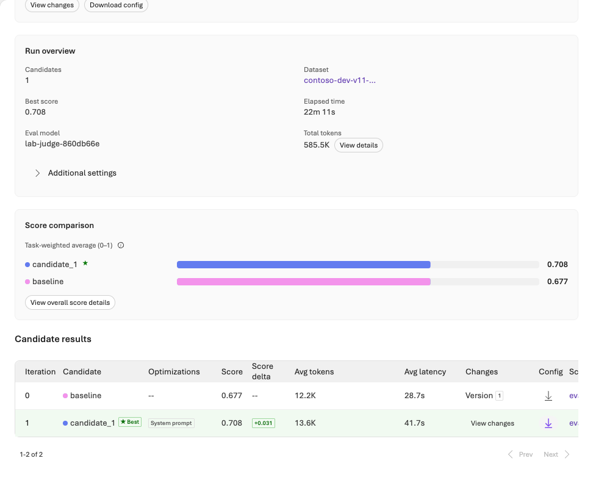

검증 기록과 한계
2026-09-30 신규 Azure 환경에서 실제 실행했습니다. 최종 운영 판단은 HOLD입니다.
리소스·서비스 실행 성공과 품질 합격은 다릅니다. 실제 Agent Optimizer와 SFT는 종료했지만 중요 실패·Judge 교정 불일치·미승인 사람 검토가 남았습니다. 합격선을 낮추거나 실패 응답을 재추첨하지 않았습니다.
정리한 근거는 evidence/integration-20260930/에, 가공 전 API 응답·승인·전체 ID·환경 파일은 비공개 .lab/lab-20260930-live/에 있습니다. DEMO와 이전 v1 기록을 신규 LIVE 결과로 사용하지 않았습니다.
1. 실행과 품질 상태
| 대상 | 실제 결과 | 판정 경계 |
|---|---|---|
| 새 RG·인프라 | rg-foundry-eval-v11-20260930-eca723, North Central US. ARM Succeeded, bootstrap의 리소스·연결·역할 소유 기록 25개 |
기존 환경 재사용 아님. 이후 SFT 모델 배포는 별도 소유 원장 |
| 모델 smoke | 새 gpt-4.1-mini 배포에서 실제 response ID, 입력 21/출력 2 토큰, 약 3.03초 | 연결 확인이지 품질 평가 아님 |
| 기준선 Agent | Foundry Agent Service 고정 버전에서 dev 3건 응답 | 지식 없는 기준선. 인용/업무 실패 보존 |
| Foundry IQ | 실제 embedding, 벡터 인덱스, vector/hybrid 질의, IQ 계획·출처, Agent의 MCP 호출 실행 | 직접 검색 진단과 Agent에 실제 제공된 근거를 분리 |
| IQ dev | 12건 캡처 완료. JSON 10/12, route 6/12, 인용 6/12, 중요 규칙 실패 3건 | 로컬 규칙도 통과하지 못함 |
| 업무 Judge | 실제 정책/관련성/검색 근거성 채점. IQ dev의 API·형식 오류/누락 8건을 분모에 유지 | 성공한 행만 평균 내어 통과 처리하지 않음 |
| 관리형 평가 | 실제 cloud eval/run 완료, 3건 수집 | 검색 없는 행의 서비스 groundedness 숫자는 검색 근거성으로 인정하지 않음 |
| Prompt Optimizer | 실제 서비스 제안과 변경 이유를 보존하고 새 Agent에서 3건 재평가 | 3건 모두 JSON 계약 실패. 서비스 완료 ≠ 개선 |
| Agent Optimizer | 실제 succeeded, 후보 1개, native baseline/candidate 각 12건 |
내장 순위는 개선됐으나 실습의 중요 규칙 실패는 남음 |
| SFT | 학습 전 기준선 → 파일 processed → 1 epoch 학습 succeeded → 실제 학습 모델 배포 Succeeded → paired 12×2 평가 | 일반 SFT이며 Frontier가 아님. 중요 실패가 남아 운영 합격 아님 |
| 대화형 진단 | 실제로 확인 질문을 했으나 JSON 밖 문장이 있어 첫 턴 형식 실패 | scripted follow-up을 실행한 것으로 꾸미지 않고 중단 |
| freeze·fresh12 | 후보/모델/검색/Judge/게이트/데이터를 동결한 뒤 12건 생성·등록 | 교정 HOLD 때문에 최종 유료 추론은 제출 전 차단 |
| Control Plane | 실제 IQ Agent의 모델 span 24개, 도구 span 11개를 response ID로 연결 | cloud evaluation event와의 자동 연결은 미확인. 정책 적용을 주장하지 않음 |
| 다음 데이터 | 실제 dev 실패 12건을 response ID와 연결한 검토 대기열 생성 | 정답은 비어 있고 사람 검토 PENDING, 자동 학습/승격 없음 |
| 사람 승인·Frontier | 사람 운영 승인 없음. Frontier 지원·참여 경로는 NOT_VERIFIED | 과금 승인, 일반 SFT, AI 검토가 대신하지 못함 |
원본은 Contoso 정책 8개와 사례 100건입니다. train 56 / validation 12 / dev 12 / test 20을 보존했습니다. 별도의 교정 16건과 대화 진단 1건은 원본 100건에 덮어쓰지 않았습니다.
2. 실제 작업 ID와 비교
관리형 cloud 평가
- Evaluation:
eval_42db44f4d5174b018cd4d00387638c9c - Run:
evalrun_415db05c42e744948446769ba2150dd5 - 서비스
completed, 3건 전부 수집. 관련성 평균 3.333/5. - 입력의
retrieved_context는 비어 있었습니다. 일부 서비스 grader 입력에서 답변이 context로 채워진 것도 관측했습니다. 로컬 수집기는 이를 실제 검색으로 인정하지 않아 groundedness를 scored 0 / missing 3 / mean null로 기록했습니다.
서비스가 높은 groundedness를 반환해도 무엇을 근거로 채점했는지 확인해야 합니다. 정답 정책을 Agent 검색 결과인 것처럼 주입하지 않았습니다.
Judge 교정 — 실패를 보존한 변경
| 교정 | 실행 | 정책/관련성 일치 | 검색 근거성 일치 | 결과 |
|---|---|---|---|---|
cal-01 |
요청 메시지 type 누락으로 HTTP 400 | 점수 없음 | 점수 없음 | 오류 보존 |
cal-02-protocol |
프로토콜만 수정한 새 실행 | 각각 16/16 | 14/15 | HOLD |
cal-03-boundaries |
검색 Judge 1.1.0, 경계 모순을 더 엄격히 명시 | 각각 16/16 | 14/15 | HOLD |
1.0.0 Judge는 “엄격히 이전”에 정확히 같은 시각이 포함된다는 잘못된 답에 4점을 줬습니다. holdout 생성 전 1.1.0에서 이런 모순은 사소한 누락이 아니라고 명시했습니다. 합격선 4와 교정 요구 100%는 그대로이며 레이블·사례를 바꾸지 않았습니다. 새 교정에는 다른 불일치가 남아 HOLD를 유지했습니다. 같은 결과를 점수가 잘 나올 때까지 반복하지 않았습니다.
교정 참조도 AI 보조 작성 합성 자료입니다. 일치율이 높아도 전문가의 독립적인 정답 검토를 대신하지 않습니다.
두 Optimizer는 별도 실행
Prompt Optimizer는 일시적 제안 기능으로 원본·응답 JSON·변경 이유·후보 SHA-256을 보존했습니다. 이 응답에는 영구 작업 ID가 없어 만들어 넣지 않았습니다. 후보는 별도 Agent 버전으로 검사했고 3건 모두 형식 실패를 보였습니다.
Agent Optimizer:
- Run:
opt_e2a5acd01eb34e4b9248ba6305241e11 - Best candidate:
cand_opt_e2a5acd01eb34e4b9248ba6305241e11_0001 - Native evaluation:
eval_18177e4e0b114845806ae3b1a90cb030 - Baseline run:
evalrun_0cb063a98c6546f0b39da75ebba5ca1d - Candidate run:
evalrun_ae7f020943174782a22906ffcbda84e3
동일 dev 12건, Relevance v14와 Task Adherence v17, 합격선 4, instruction-only, 후보 1개였습니다. 서비스 task-weighted 평균은 0.677083 → 0.708333, native 통과 행은 7/12 → 8/12, 서비스 오류 행은 양쪽 모두 0입니다.
원본 native 응답을 다시 생성하지 않고 동일한 로컬 규칙으로 검사했습니다.
| 로컬 규칙 | Native baseline | Native candidate |
|---|---|---|
| 행 수 | 12 | 12 |
| JSON 계약 | 11/12 | 11/12 |
| route | 7/12 | 7/12 |
| 필수 인용 | 6/12 | 6/12 |
| 중요 규칙 실패 | 4 | 4 |
서비스 순위가 올라도 업무 게이트 개선은 확인되지 않았습니다. 0–1 순위, 1–5 Judge, 결정적 통과율을 섞지 않습니다. 실제 native 입력 템플릿과 각 행을 확인했으며 Agent의 user 입력은 query만이고 ground_truth는 평가용으로 분리되어 있었습니다.
별도 클라이언트 재실행 optimized-dev는 7번째 요청에서 429를 반환해 중단했습니다. 6건의 성공과 오류 1건만으로 12건 평균을 만들지 않았고 원본 요청/응답과 미시도 상태를 보존했습니다. 위 표는 이 부분 실행이 아니라 서비스에서 완료한 native 12×2 응답입니다.

일반 SFT의 실제 종료와 paired 평가
- Job:
ftjob-5c768d4bc0e44b6a8e66cbe21aa10813 - 기반:
gpt-4.1-mini-2025-04-14 - 실제 모델:
gpt-4.1-mini-2025-04-14.ft-5c768d4bc0e44b6a8e66cbe21aa10813 - 배포:
lab-sft-860db66e, Standard, capacity 20 - 56 train / 12 validation, 1 epoch, 30,722 trained tokens.
같은 system·query/context·temperature 0·seed 105·Standard capacity 20에서 dev 12건씩 비교했습니다. JSON은 양쪽 12/12, route는 10/12 → 11/12, 인용은 9/12 → 11/12, 중요 실패는 2 → 1, API 오류는 양쪽 0입니다. 총 관측 토큰은 7,385 → 7,226입니다.
이는 정적 정책 문맥을 제공한 동일 모델 계열의 작은 합성 dev 비교입니다. 실제 IQ 검색 품질이나 미노출 실세계 개선율, Frontier 성과로 부르지 않습니다. 자세한 재개 명령은 SFT 부록에 있습니다.
3. 동결·보류와 다음 평가
selected-v2를 2026-09-30 02:25:52.396539 UTC에 동결한 뒤 fresh-01 12건을 생성·등록했습니다. 원본 100건, 교정 16건, 별도 대화 1건을 포함한 기존 117건과 비교했고 1,470쌍 검사에서 ID·상황 그룹·동일/고유사 질문 겹침이 검출되지 않았습니다.
이는 NFKC 정규화·숫자 masking·문자열/토큰 유사도 0.88 기준의 어휘 검사입니다. 템플릿에서 만든 합성 변형이며 독립 실세계 표본이나 의미상 무누출을 보증하지 않습니다.
최종 명령의 gate를 실제 확인했습니다. 교정 HOLD 때문에 model 요청 전에 종료 코드 1로 차단됐고, optimized-fresh run 및 최종 attempt가 생성되지 않았습니다. 점수는 미측정입니다. 원래 test20의 최소 행 수·합격선을 줄여 통과시키지 않았습니다.
사람 검토, 교정 불일치 해결과 새 실험 설계가 필요합니다. 이 holdout을 보고 Judge를 유리하게 수정하거나 재채점하지 않습니다. 변경이 필요하면 실패·동결 기록을 보존하고 새 freeze와 새 holdout을 사용합니다.
대화 진단은 실제 확인 질문 뒤에 JSON 밖 설명 문장이 붙어 형식 gate에서 중단됐습니다. 사용자 후속 입력과 최종 답변까지 성공했다고 보고하지 않습니다. scripted 입력은 실제 사용자나 사람의 승인도 아닙니다.
4. 인증·검색·관측에서 확인한 함정
| 실제 관측 | 반영한 조치 |
|---|---|
| 폐기 모델이 catalog/쿼터 조회에는 남음 | 실제 Provider validation을 추가하고 생성 전 명시적으로 모델을 다시 선택 |
| 프로젝트와 모델 생성이 충돌 | 계정 하위 작업을 순서대로 생성. 동일 ID/설정의 의존성 수정만 이력으로 보존 |
| MI App Insights 연결에 라우팅 메타데이터 필요 | 같은 새 관측 자원을 참조하도록 추가. key 인증이나 local auth를 켜지 않음 |
Search 상태가 소문자 succeeded |
실제 응답 표현을 처리하되 누락/오류 상태는 성공으로 간주하지 않음 |
| Azure MCP 관리 도구의 데이터 평면 테넌트 불일치 | 해당 호출 거부를 보존. 검증한 CLI/SDK/브라우저를 사용. Agent 내부 Search MCP의 프로젝트 MI와는 다른 경로 |
| 장시간 실행 뒤 CAE/MFA 갱신 요구 | 정상 로그인/MFA 후 주체를 다시 확인. 명시한 Graph audience·구독으로 원래 provisioner ID가 일치하는지 검증. 정책 완화 없음 |
| 긴 검색/SDK 봉투로 토큰 제한 | 원본 429 보존, 명시적 pacing과 문답 전용 Judge projection. 이미 실패한 Judge를 다른 경로로 재채점하지 않음 |
| 빈 관측 화면/누락된 evaluation event | 실제 response ID별 model/tool span만 확인. 연결되지 않은 항목은 PARTIAL/NOT_VERIFIED |
실제 embedding은 text-embedding-3-small v1, 1,536차원이고 인덱스는 HNSW/cosine입니다. vector와 hybrid는 실제 문서를 반환했으며 IQ 응답의 계획·출처·활동도 보존했습니다. 실제 Agent는 기존 Foundry Agent Service 버전과 knowledge_base_retrieve MCP 도구를 사용했습니다.
Control Plane에서는 IQ dev의 model span 24개와 tool span 11개를 관측했습니다. 평가와의 자동 event 연결·공유 정책 적용은 완료로 표시하지 않습니다. 실제 dev 실패는 response ID가 포함된 검토 전용 대기열로 내보냈고, 정답/사람 검토/학습 승격은 자동 생성하지 않았습니다.
5. 비용과 보존
실제 Cost Management 조회는 성공했지만 아직 비용 행이 없었습니다. 0원이라는 뜻이 아닙니다. 사용량은 SDK/서비스가 반환한 토큰·지연으로 기록하고 청구액은 미관측으로 둡니다.
| 보존 중 과금 항목 | 조회한 참고 단가 |
|---|---|
| Search Basic 1 replica × 1 partition | USD 0.101/시간 |
| SFT Standard 모델 호스팅 | USD 1.70/시간 |
| 위 두 호스팅 항목 합계 | 약 USD 1.801/시간, USD 43.224/24시간 |
추론·IQ planner·평가·최적화·학습·로그 사용량은 별도입니다. 이 소매 참고 단가는 실제 청구서·세금 포함 확정액이 아니며 가격/계약은 변할 수 있습니다. Azure Budget은 지출 차단 장치가 아닙니다.
금액 상한 없음이 승인되었으며, 새 RG는 검토를 위해 보존합니다. 삭제는 승인되지 않았습니다. 기존 그룹·배포·다른 프로젝트 권한을 줄이거나 삭제하지 않았습니다.
6. 로컬·출판 검증
초기 통합 출판에서는 전체 자동 검사, 원본 데이터 byte/hash·누출 검사, 실제 문서 CLI 문법, 링크·목차·코드 복사·모바일·인쇄 검사를 구분해 수행했습니다. Playwright headless로 웹 검증과 PDF 생성을 진행했습니다. 당시 Foundry 포털은 headless 세션에 인증이 없어 정상 로그인/MFA가 있는 브라우저를 사용했으며 자격 증명을 복사하지 않았습니다. 아래의 후속 가이드 화면 보강 촬영과는 구분되는 기록입니다.
좌측 상단과 파비콘은 Microsoft 공식 Azure 아이콘 패키지의 Foundry SVG를 동일 파일로 사용합니다. 원본 모양/색상을 바꾸지 않았고 출처·사용 조건을 포함했습니다.
python -m lab validate
python -m unittest discover -s tests -q
python scripts/build_guide.py
python scripts/build_guide.py --check
python scripts/verify_pdf.py Foundry-Learning-Loop-Lab-KO.pdf
python scripts/package_lab.py
명령 해설:
| 명령 | 검사/생성 범위 |
|---|---|
lab validate |
원본·분할·내보내기 byte/hash 일치의 로컬 검사. 모델 성능 검사 아님 |
unittest discover -s tests -q |
로컬 자동 검사를 발견해 실행. -q는 간결한 출력이며 LIVE 서비스 실행 아님 |
scripts/build_guide.py |
등록된 원문에서 HTML·통합 인쇄 HTML 생성 |
scripts/build_guide.py --check |
생성 파일을 쓰지 않고 원문과의 일치 확인 |
scripts/verify_pdf.py ...pdf |
이미 만들어진 PDF의 텍스트·빈 페이지·잘림·로컬 링크 검사. PDF 생성 명령 아님 |
scripts/package_lab.py |
공개 허용 소스·정리된 증거·가이드·PDF를 로컬 ZIP으로 묶음. 업로드/배포 아님 |
독립 ZIP을 새 폴더에 풀어 SDK·자격 증명·네트워크·subprocess 없이 DEMO를 실행했고 원본 100건 검사도 통과했습니다. v1 실행 파일/README가 필요하지 않습니다.
후속 가이드 보강 · 실제 포털 화면
2026-09-30, 정상 사용자 인증 후 Headless Playwright MCP에서 기존 전용 프로젝트를 직접 열어 14장을 추가 촬영했습니다. 일시적인 로그인 상태 전달 파일은 로컬 세션 폴더에서만 사용한 뒤 제거했고, 인증 정보·쿠키·서명 다운로드 URL·원시 브라우저 스냅샷은 배포 자산에 넣지 않았습니다. 이미 있는 자원·실행을 조회했으며 마법사에서 파일 업로드·Submit·Promote·Deploy·권한 변경은 수행하지 않았습니다.
| 화면 범위 | 안내에서 확인할 것 |
|---|---|
| 01–02 프로젝트·모델 | 프로젝트 선택, 배포 이름·모델 버전·유형, 배포 성공과 품질의 차이 |
| 03–04 에이전트 | 단계별 Agent 이름·버전과 모델·지시·도구 구성 |
| 05–06 Foundry IQ | 실제 KB·source, Low/Extractive data, Agent Knowledge 카드 |
| 07–08 미제출 Optimizer 설정 | Choose targets의 Instruction만, 후보 1개, 실제 Judge 배포, 준비한 dev 업로드 경로 |
| 09–11 기존 Optimizer 결과 | 서비스 순위·지시 diff·native 평가, 로컬 업무 Judge와의 차이 |
| 12–13 기존 IQ trace | iq-dev의 atlas-dev-001 response ID로 조회한 실제 MCP 입력/출력. 최종 fresh 결과 아님 |
| 14 기존 SFT job | 실제 완료 작업·모델·파일·epoch, 학습 지표와 업무 성능의 차이 |
촬영 시 새 마법사는 Optimize → Agent → Choose targets 경로였고, Select dataset and criteria를 고르면 Dataset·Criteria 단계가 나타났습니다. 기존 공식 문서의 메뉴 표기와 실제 화면의 차이를 본문에 병기했습니다. 화면은 위조하거나 성공 상태로 바꾸지 않았고 개인정보·endpoint 가림과 부분 잘라내기만 적용했습니다.
파일별 출처·상태·가림·치수·SHA-256은 web/assets/portal/captures.json, 이번 보강의 로컬 출판 점검은 checks.json과 pdf-check.json에 분리합니다. 기존 integration-20260930의 LIVE 결과·HOLD·이전 출판 검증은 덮어쓰지 않습니다. 사진에서 trace나 학습 완료가 보여도 미실행 최종 시험과 사람 승인 부재를 해소하지 않습니다.
7. 재개할 때 지킬 기준
| 상태 | 재개 |
|---|---|
| 원격 ID가 있는 작업 | 같은 ID의 status/collect. create/submit 반복 금지 |
| 429·연결 단절 후 response ID 없음 | 원본 보존, 결과 불명. 성공한 일부 행으로 통과 처리하지 않음 |
| 교정 HOLD | 전문가 검토·새 실험 설계. 현재 final gate 우회 금지 |
| Frontier NOT_VERIFIED | 공식 지원 경로와 해당 계정 참여 확인 전 제출하지 않음 |
| 관측 PARTIAL | 실제 response ID와 MI/ingestion/평가 연결을 확인. 빈 화면을 무오류로 해석하지 않음 |
| 미승인 운영 전환 | 실제 책임자의 별도 승인. AI가 작성한 검토는 AI로 유지 |
기록 갱신 원칙
원본 API 응답, 실패, remote ID, 코드 커밋/해시, 데이터·프롬프트·모델·검색·평가기·게이트를 연결합니다. 출판물에는 안전하게 정리한 증거만 포함하며 키·토큰·MFA 정보·개인정보는 넣지 않습니다.
공개 게시 범위: 2026-09-30 소유자가 최신 가이드의 커밋·푸시 후 현재 v1 저장소의 Public 전환과 GitHub Pages 게시를 별도로 요청했습니다. 이전 Private 유지 조건은 초기 이관 당시의 기록입니다. 공개 대상은 이 저장소의 정리된 소스·가이드·증거이며 비공개 환경·인증·원본 실행 기록은 제외합니다. 보관 원본 v0.9의 접근·아카이브 상태와 Azure 리소스·권한·품질 HOLD는 변경하지 않습니다.